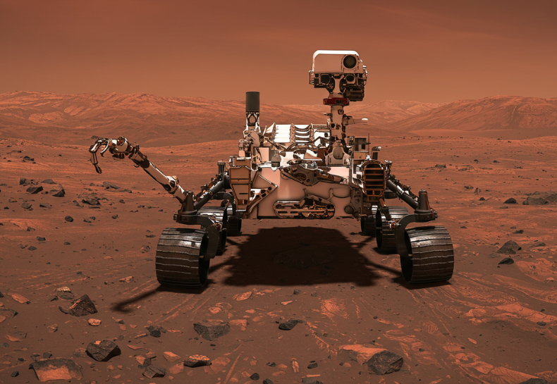

Perseverance
Agencia: NASA
Fecha de lanzamiento: 30 de julio de 2020
Aterrizaje: 18 de febrero de 2021 en el cráter Jezero
Duración: Misión activa (más de 3 años terrestres)
Tipo de misión: Rover científico con recolección de muestras
Objetivo: Buscar signos de vida microbiana pasada, recolectar y almacenar muestras marcianas para una futura misión de retorno, y estudiar el clima y la geología.
Carga científica: SuperCam, SHERLOC, PIXL, MOXIE (oxígeno desde CO₂), cámaras Mastcam-Z, RIMFAX (radar de subsuelo), y el helicóptero Ingenuity como demostrador tecnológico.
Impacto histórico
Perseverance representa el inicio de una nueva era en la exploración marciana. Es el primer rover en preparar muestras para su retorno a la Tierra, y su compañero Ingenuity realizó los primeros vuelos controlados en otro planeta. Ha establecido nuevas fronteras tecnológicas en navegación autónoma, análisis espectral y construcción de hábitats futuros mediante producción in-situ.